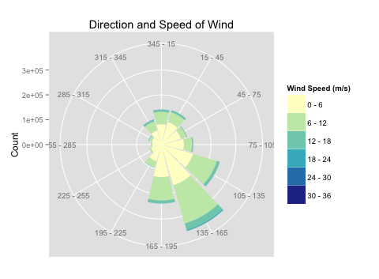

Health Informatics
As a research assistant in the Institute of Health Informatics, I use natural language processing techniques on clinical notes.
These results can be used for:
- Data mining of patient's family and social history to search for correlations in their health.
- Quickly scanning doctors' patient history for possible interaction with specific diseases or infections.
- Automatically extracting relevant sections of doctor's notes to be shared with patients, creating a more transparent patient experience.
Air Pollution Modeling
For my Master's project I'm applying spatiotemporal modeling to a large air pollution dataset.